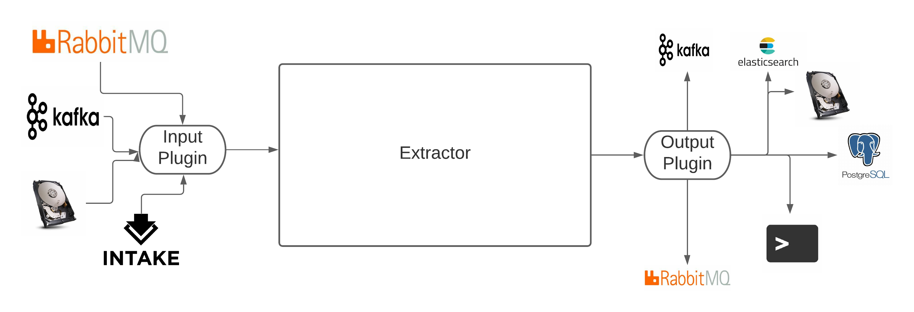

STAC Generator
The STAC Generator provides the framework and access to shared tools. The framework allows you to build generators to get metadata from file objects using plugins to change the source of the files, the output of the metadata and the processing chain which extracts the metadata. The framework leverages a modular, plugin architecture to allow users to modify the workflow to fit their needs.
The process expects a stream of “messages” for which the recipes can be run against. The source of this stream is configured with input plugins which could be as simple as listing directories on a file system or using message queues as part of a complex ingest system. The generators operate on this stream and pass to output plugins.
These outputs are also configurable so could dump to the terminal (for debugging), file, a data store (postgres, elasticsearch, etc.) or even a message queue for onward processing.
The framework was constructed to extract metadata for creating STAC catalogs but could be used to extract metadata for any faceted search system.
What is STAC?
The SpatioTemporal Asset Catalog (STAC) specification provides a common language to describe a range of geospatial information, so it can more easily be indexed and discovered. A “spatiotemporal asset” is any file that represents information about the earth captured in a certain space and time.
Generators
The different generators are designed to extract different levels of metadata to build the items, and collections of the STAC Catalog.
Name |
Description |
|---|---|
Generates STAC Items via extraction methods specified in the relevant recipe. |
|
Generates STAC Collections via extraction methods specified in the relevant recipe. |
Contents:
API: